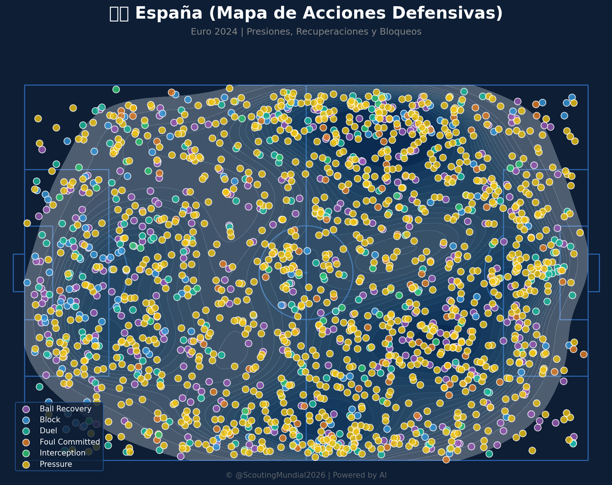
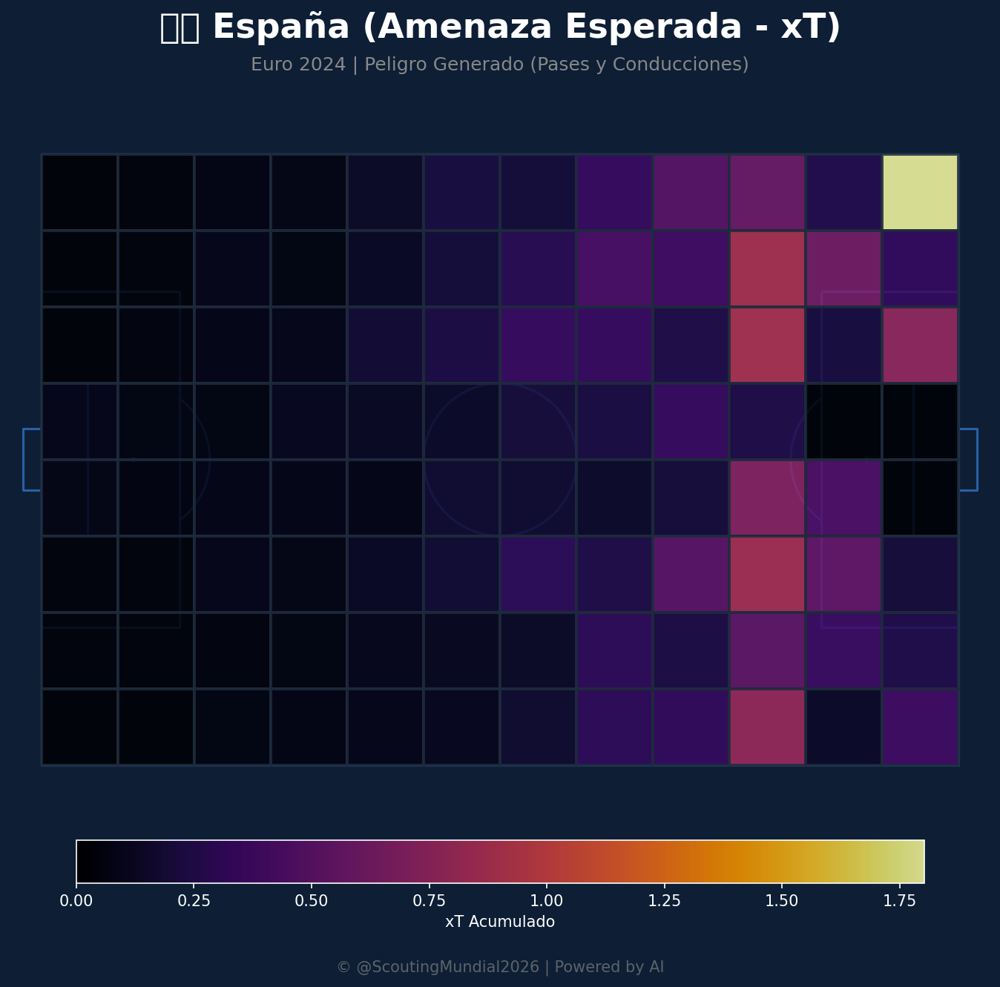
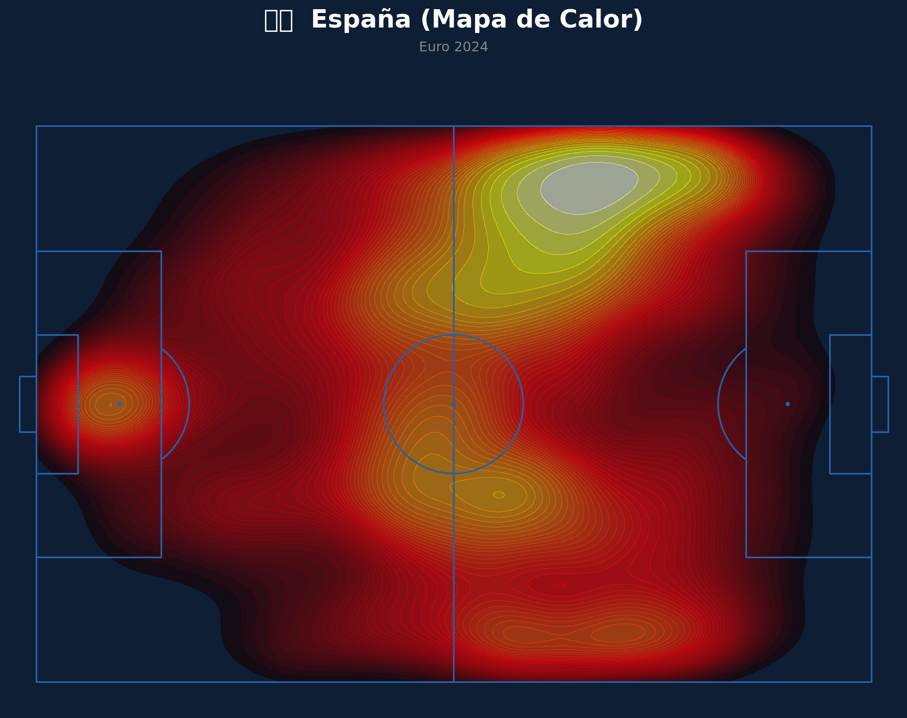
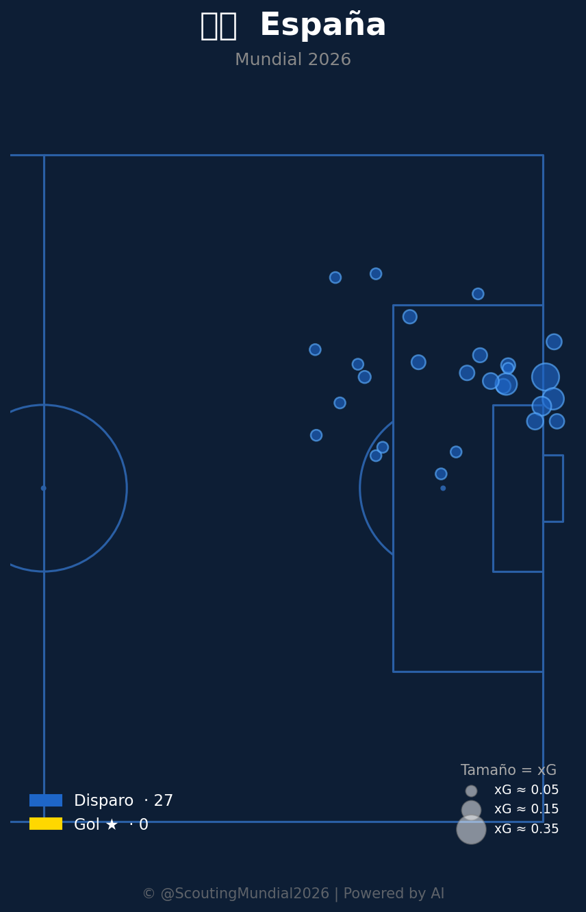
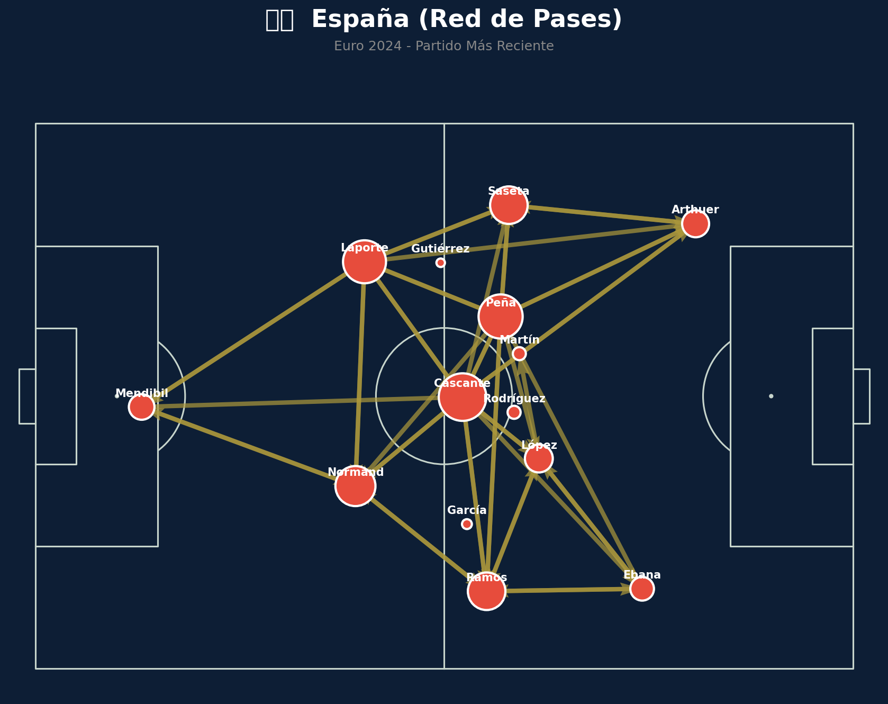
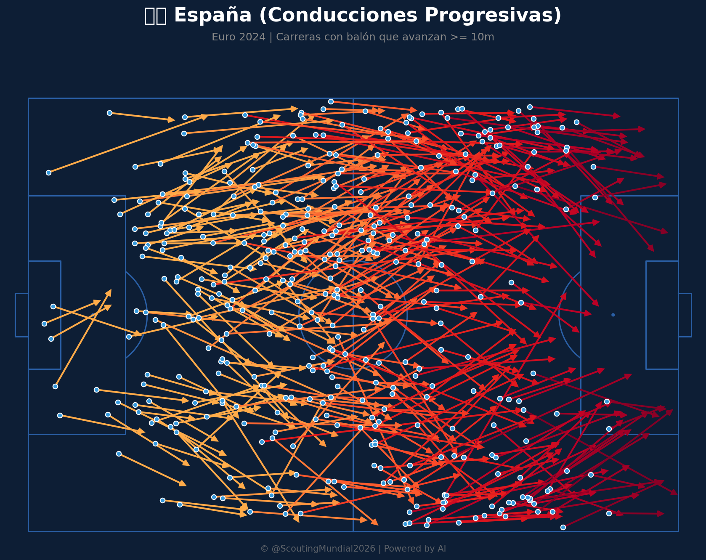
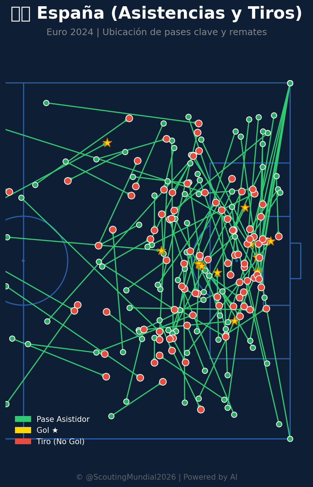

Grupo H
 Cabo Verde
Cabo Verde
España vs Cabo Verde
📅 2026-06-15 · 🕒 11:00 (Local)
España

0 - 0
FINALIZADO
Cabo Verde
📅 2026-06-15 · 🕒 11:00 (Local)
Cabo Verde
Este es uno de los enfrentamientos más desequilibrados en términos de volumen de juego, pero con un dato que obliga a no subestimar al rival menor: la eficacia de cara a gol de Cabo Verde es sorprendentemente alta. Aun así, España aparece como claro favorito por la enorme diferencia en dominio territorial y creación de juego.
El mapa de calor español muestra un dominio territorial abrumador: prácticamente todo el campo está cubierto, con una concentración especialmente intensa en una zona del último tercio donde se forma un núcleo amarillo/gris muy marcado, lo que indica que España no solo tiene el balón, sino que lo hace circular con frecuencia muy cerca del área rival. La red de pases es impresionante por su nivel de interconexión: prácticamente todos los jugadores de campo (Cáscante, Peña, Laporte, Normand, Saseta, Arthuer, López, Ramos, Ebana, Mendibil) aparecen conectados entre sí con múltiples líneas, reflejo de un equipo que hace circular el balón con una fluidez y variedad de circuitos muy superior a la media.
El mapa de amenaza esperada confirma esa superioridad: hay una celda con un valor de generación de peligro extremadamente alto en una esquina del último tercio, además de varias zonas con valores elevados distribuidas por todo el ataque, lo que indica múltiples fuentes de peligro. El mapa de conducciones progresivas es masivo en volumen, con carreras con balón que llegan constantemente al último tercio desde prácticamente cualquier zona del campo. En defensa, el mapa de acciones muestra una presión intensísima y extendida por todo el terreno, sin zonas de descanso para el rival.
En cuanto a definición, los números son contundentes: 109 disparos y 14 goles (cerca de 12.8% de conversión), con los remates formando una nube muy densa dentro y alrededor del área, y varios goles agrupados en zonas de alto peligro.
El mapa de calor caboverdiano muestra una buena ocupación de su mitad ofensiva, con varias zonas de concentración amarilla/gris que sugieren un equipo capaz de sostener posesión en ciertos tramos del partido, aunque su presencia en el último tercio rival es claramente menor y más oscura, lo que indica menos tiempo jugado cerca del área contraria. La red de pases muestra una estructura central razonable, con Fernandes, Lopes, Pina, Costa y Moreira como ejes de la circulación, y conexiones hacia Cabral/Correia en zonas más adelantadas, aunque con menos densidad de conexiones que un equipo top.
El mapa de amenaza esperada muestra una generación de peligro mucho más concentrada y puntual, con un par de celdas destacadas cerca del área rival, lo que sugiere que dependen de jugadas específicas más que de un dominio sostenido. El mapa defensivo muestra buena cobertura en su propia mitad y zona media, con bastante actividad de presión. El mapa de conducciones progresivas tiene un volumen considerable en el medio campo, aunque algo menos denso en la franja final comparado con España.
El dato verdaderamente llamativo es el de definición: con solo 32 disparos, Cabo Verde anotó 10 goles, una tasa de conversión de aproximadamente el 31%, con varias burbujas grandes de xG que efectivamente se transformaron en gol. Es una eficacia extraordinaria, muy por encima de la española.
En definitiva, España parte como favorito claro por volumen, calidad colectiva y dominio del juego, pero Cabo Verde representa el tipo de rival que, con su altísima eficacia de cara a gol, podría convertir muy pocas ocasiones en un resultado que incomode a un favorito tan superior sobre el papel.
En una de las grandes sorpresas de la jornada inaugural del Grupo H, España y Cabo Verde empataron sin goles (0-0) en un encuentro marcado por el dominio territorial estéril de "La Roja". La selección española monopolizó la posesión y elaboró interminables circuitos de pases con Cáscante, Laporte y Ramos buscando penetrar el bloque bajo caboverdiano. Sin embargo, Cabo Verde plantó una línea defensiva sumamente disciplinada y compacta, bloqueando la fluidez interior de España y forzando remates incómodos. A pesar del abrumador volumen de juego español, la falta de pegada y la gran actuación colectiva de Cabo Verde en su propia mitad sentenciaron un reparto de puntos histórico.












